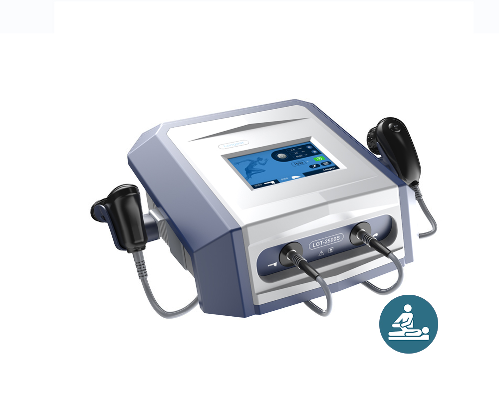
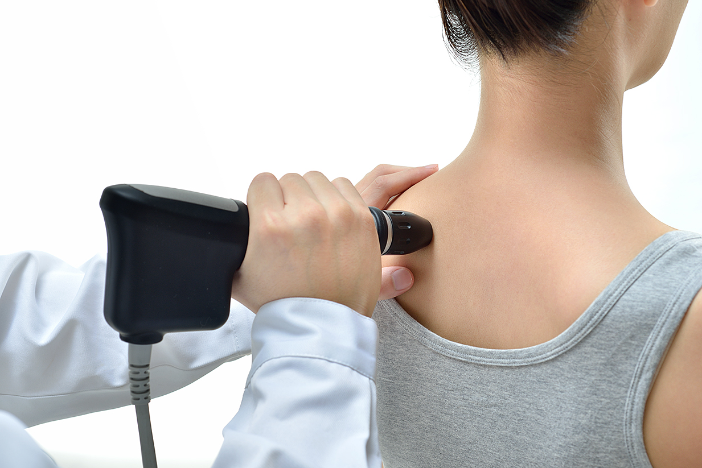
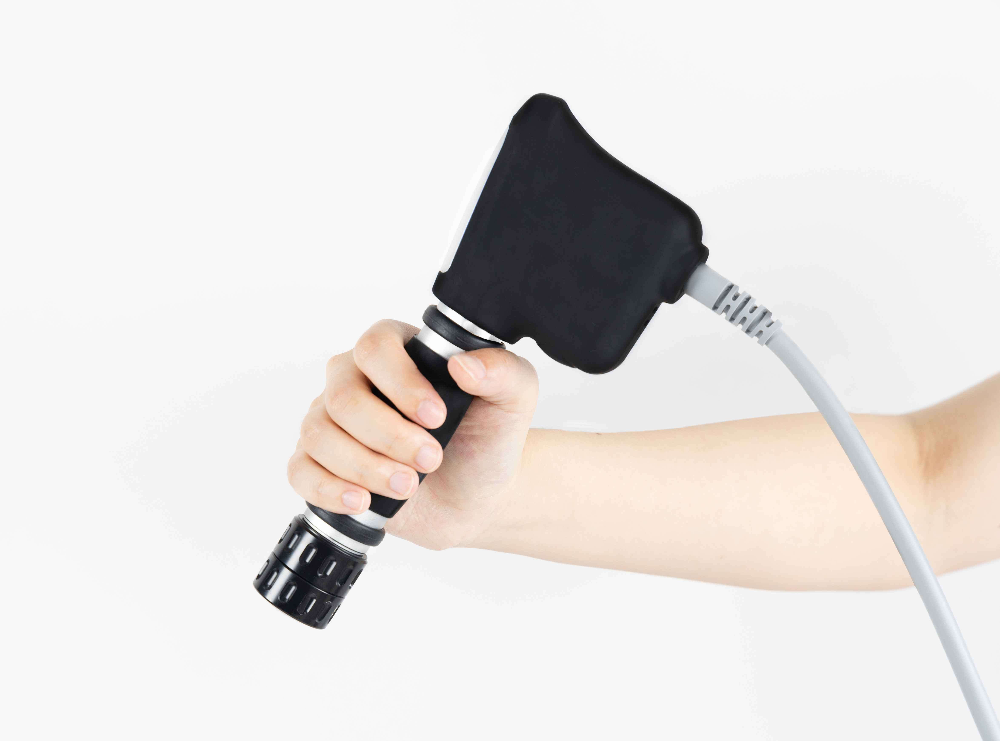
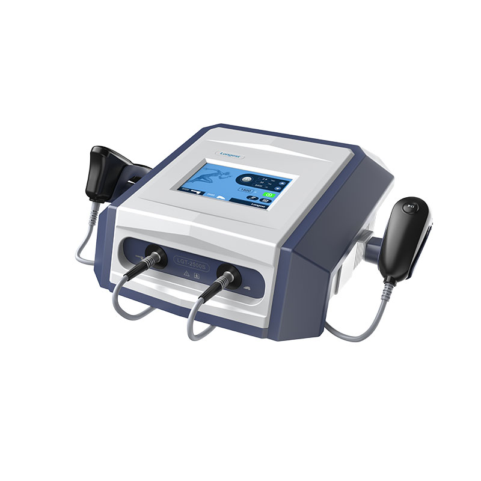

מכשיר גלי הלם רדיאליים חוץ-גופיים דו-ערוציים מקצועי לפיזיותרפיה, אורתופדיה ורפואת ספורט. המכשיר מאפשר למטפלים להגיע לרקמה עמוקה, להפחית כאב שרירי-שלדי, לשפר מיקרו-סירקולציה ולהאיץ ריפוי אזורים פגועים — עם הפעלה פשוטה, ביצועים גבוהים ואמינות לאורך זמן.

2
ערוצים
1.0–5.0bar
טווח לחץ
1–22Hz
טווח תדר
2M
פולסים לראש



גלים רדיאליים מתפשטים על פני שטח הרקמה ומתאימים לטיפול במצבים שטחיים-יחסית כמו גידים ורצועות. גלים ממוקדים מרכזים את האנרגיה בנקודה עמוקה אחת. ה-LGT-2500S PLUS הוא מכשיר רדיאלי.
גלי הלם רדיאליים חוץ-גופיים
מכשיר גלי הלם רדיאליים דו-ערוצי מקצועי לפיזיותרפיה, אורתופדיה ורפואת ספורט — הגעה לרקמה עמוקה, הפחתת כאב והאצת ריפוי
מכשיר גלי הלם רדיאליים חוץ-גופיים דו-ערוציים מקצועי לפיזיותרפיה, אורתופדיה ורפואת ספורט. המכשיר מאפשר למטפלים להגיע לרקמה עמוקה, להפחית כאב שרירי-שלדי, לשפר מיקרו-סירקולציה ולהאיץ ריפוי אזורים פגועים — עם הפעלה פשוטה, ביצועים גבוהים ואמינות לאורך זמן. טווח לחץ 1.0–5.0 בר, טווח תדר 1–22 הרץ, מסך מגע 7 אינץ' ועמידות ראש טיפול עד 2 מיליון פולסים.
כאב שרירי-שלדי כרוני, פציעות גידים ורצועות ודלקות מקומיות דורשים טיפול ממוקד ולא-פולשני להאצת ריפוי והפחתת כאב.
גלי לחץ רדיאליים המתפשטים על פני הרקמה, עם שליטה מלאה בלחץ (1.0–5.0 בר) ובתדר (1–22 הרץ) בזמן אמת.
הגלים הרדיאליים מעניקים אנרגיה מכנית לרקמה הפגועה, מגרים מיקרו-סירקולציה, תהליכי ריפוי ופירוק משקעי סידן, ומפחיתים כאב באמצעות שערי הכאב בחוט השדרה.